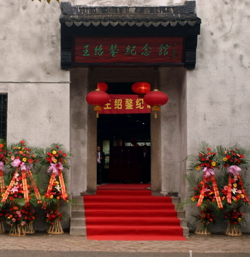
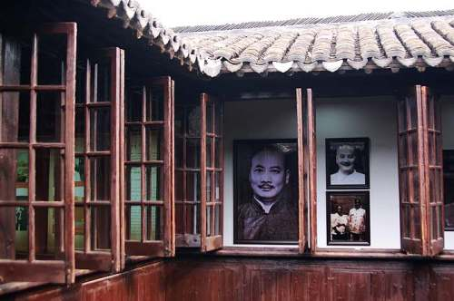

王绍鏊纪念馆

王绍鏊纪念馆2
王绍鏊纪念馆坐落在江苏省同里镇富观街35号，旧称留耕堂。2008年王绍鏊诞辰120周年之际，在同里镇将原同里历史文物陈列馆调整为王绍鏊纪念馆，新落成的王绍鏊纪念馆建筑面积500平方米，布展面积400平方米。纪念馆 以弘扬王绍鏊精神为主题，以王绍鏊革命战斗的一生为主线，通过实物、绘画、图片等手段再现王绍鏊生前的光辉业绩。另外，为更加真实生动地回顾、展示王绍鏊同志不平凡的一生，展览期间播放由上海电视台拍摄的《王绍鏊》专题片。纪念馆一楼为专馆，陈列有关王绍鏊的文物、实物、图片、文字等， 内容共分十二个部分，分别展示王绍鏊在不同历史时期的经历，二楼为附馆，介绍同里的其他历史文物。